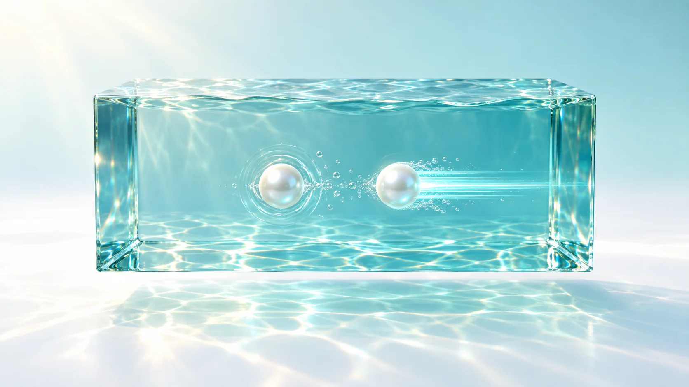
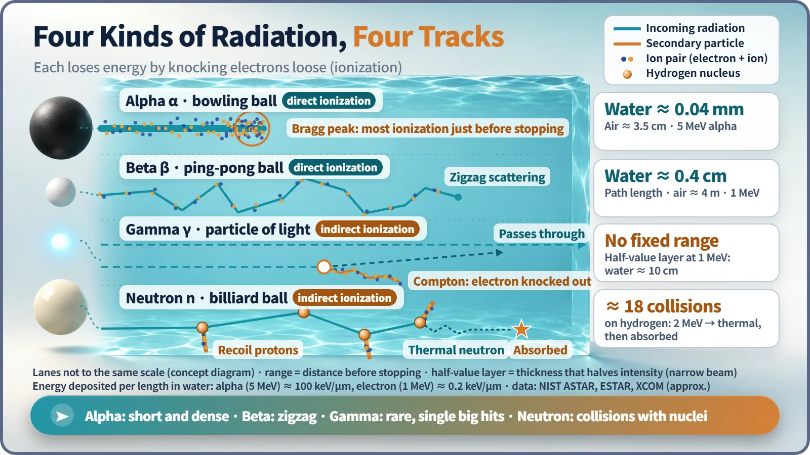
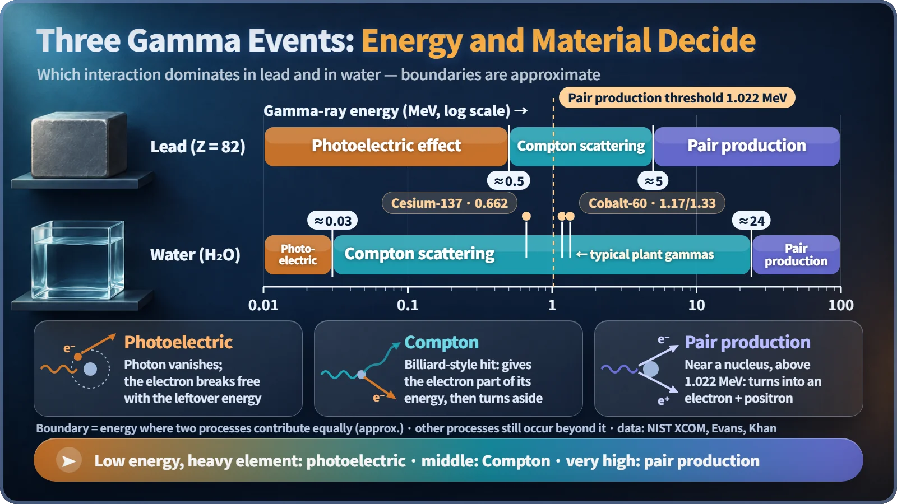

Nuclear & Radiation Basics · 021
Bowling Balls, Ping-Pong Balls and a Dead-Stop Billiard Shot — How Radiation Interacts with Matter
All radiation ends up knocking electrons loose, but alpha, beta, gamma rays and neutrons each do it in their own way.

Every kind of radiation deposits its energy in matter mainly by knocking electrons loose from atoms (ionization), but each does it in its own way. Alpha and beta particles ionize directly and lose energy a little at a time; gamma rays pass through until a single chance event; neutrons ignore electrons and collide with nuclei, losing the most to light hydrogen. [1]
Three balls, one story
Roll a heavy ball down a bowling lane and it sends the pins crashing, then simply drops into the pit. On a pool table, hit the red ball dead-on with the cue ball and the cue ball stops right where it is.
Those two scenes are almost the whole story. When radiation enters paper, water, concrete or a human body, what actually happens, and why does each type reach such a different depth?
The common language of all radiation: knocking electrons loose
The key mark radiation leaves in matter is ionization: tearing an electron away from an atom, which leaves a positive ion and a free electron, together called an ion pair. When the radiation only lifts an electron to a higher energy level without freeing it, that's excitation.
In air, making one ion pair takes on average about 34 eV (electronvolts). So a single 5 MeV (5 million eV) alpha particle creates roughly 150,000 ion pairs before it stops. Radiation damaging DNA and a detector counting radiation both start from this ionization. [2]
What differs is how the electrons get knocked loose. Charged alpha and beta particles pull electrons off directly as they pass. Uncharged gamma rays and neutrons first hand their energy to an electron or a nucleus, and that knocked-on particle does the ionizing.

Bowling balls and ping-pong balls: charged particles lose energy bit by bit
An alpha particle is a helium nucleus, about 7,300 times heavier than an electron, with a charge of +2. It tugs on countless electrons along its path through electric force, losing a little energy each time over tens of thousands of encounters. Like a heavy bowling ball that knocks down pin after pin without changing course, it leaves a thick, straight track. Because it ionizes so densely it spends its energy fast: a 5 MeV alpha travels about 3.5 cm in air and only about 0.04 mm in water or skin. [3]
A charged particle loses more energy per unit length the slower it goes, so ionization spikes just before it stops. This is the Bragg peak, the property that lets proton therapy concentrate energy at the depth of a tumor.
A beta particle (an electron) is more like a ping-pong ball. Being light, it is deflected sharply by atomic electrons and nuclei and zigzags along. Its ionization is hundreds of times sparser than an alpha's, and it goes correspondingly farther: measured along its winding path, a 1 MeV electron travels about 0.4 cm in water and about 4 m in air. [3]
A gamma ray's walk through the forest
A gamma ray is a particle of light (a photon) with no charge and no mass. Most gamma rays pass along with nothing happening, then, by chance, have exactly one big event. There is no fixed stopping distance; the beam weakens by half with every fixed thickness. For 1 MeV gamma rays this half-value layer is about 10 cm of water or about 0.9 cm of lead. [4]
| Event | What happens | Where it dominates |
|---|---|---|
| Photoelectric effect | The photon gives all its energy to an inner electron and disappears; the electron flies off with the energy left over | Low energies, heavy elements such as lead |
| Compton scattering | The photon hits an electron like a billiard ball, passes on part of its energy and changes direction | Intermediate energies |
| Pair production | Near a nucleus, the photon turns into an electron and a positron | Only above 1.022 MeV; high energies |

Which event dominates depends on both energy and material. In lead, the photoelectric effect leads up to about 0.5 MeV, Compton scattering up to about 5 MeV, and pair production above that. In water, the Compton range runs from about 0.03 MeV to about 24 MeV. The gamma rays most often met at nuclear plants, from cesium-137 (0.662 MeV) and cobalt-60 (1.17 and 1.33 MeV), give up their energy in water, concrete and the human body mostly through Compton scattering. [5]
Neutrons: it takes a ball of the same size to stop one
Neutrons have no charge either, but they mostly ignore electrons and collide directly with nuclei. When two balls of equal mass collide head-on, the striking ball hands over all its energy and stops, so a neutron loses the most energy when it hits a hydrogen nucleus (a proton) of almost the same mass. The maximum share handed over in one collision is 100% for hydrogen, about 28% for carbon and only about 2% for lead.
Slowing a fast 2 MeV neutron to a slow thermal neutron takes about 18 collisions with hydrogen but about 115 with carbon. That's why reactors use water as a moderator, the material that slows neutrons down. [1]
A slowed neutron is easily absorbed by a nucleus, which usually emits a gamma ray. Hydrogen simply becomes stable deuterium, but sometimes the absorbing atom turns radioactive, as when cobalt-59 becomes cobalt-60. This is activation. Alpha, beta and gamma radiation at ordinary energies do not make materials radioactive; activation is the neutron's job.
Key takeaways
All radiation sets down its energy by knocking electrons loose, but alpha goes short and dense, beta zigzags, gamma takes one big hit by chance, and neutrons collide with nuclei and lose the most to light partners. These differences explain why time, distance and shielding work as they do, and why each type of radiation calls for a different shielding material.